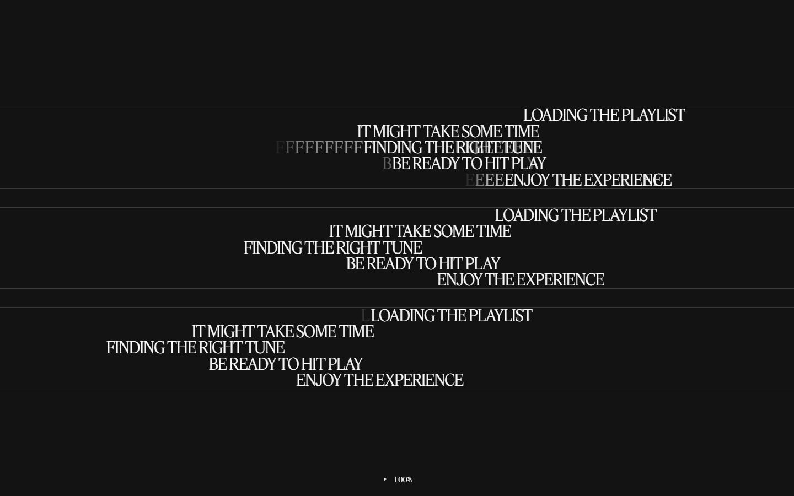
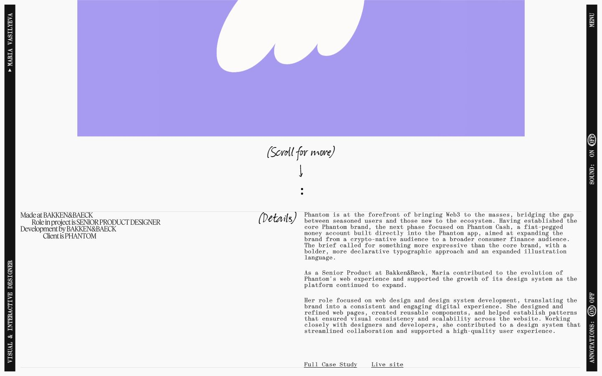
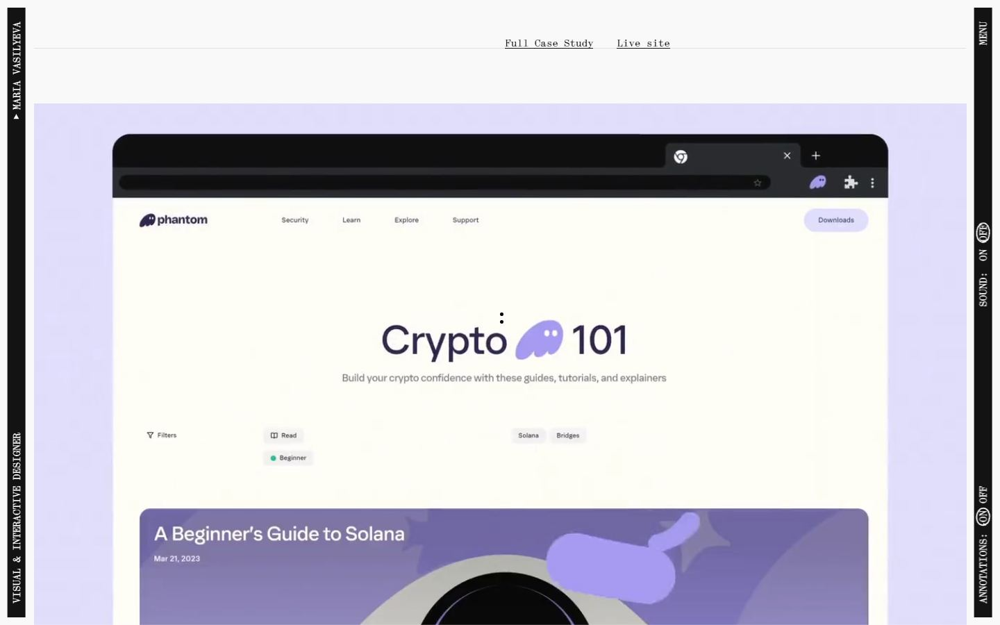
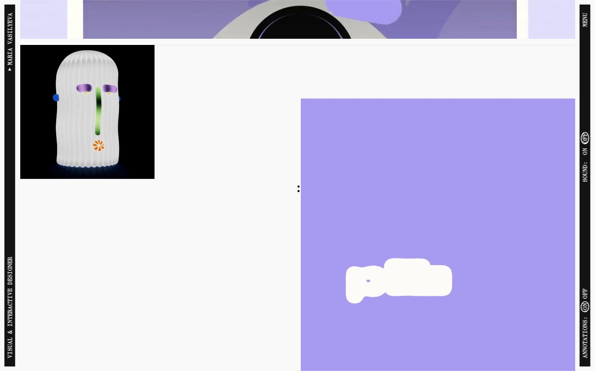
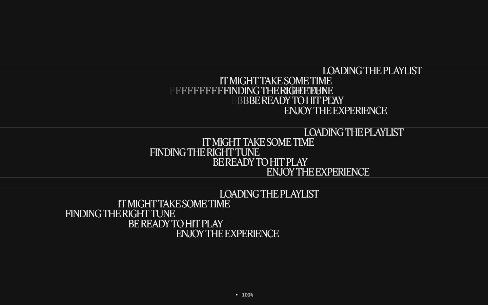
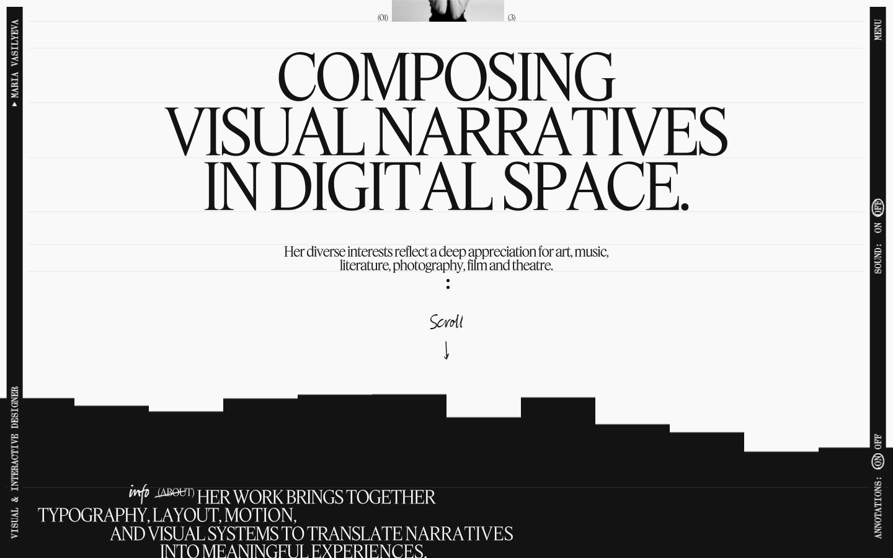
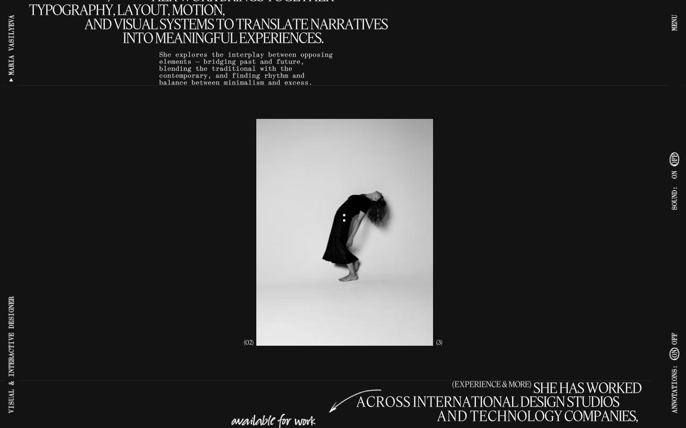
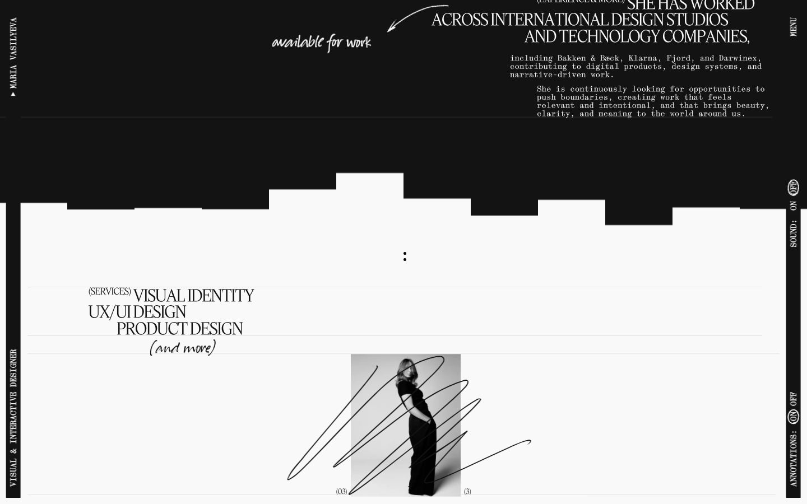
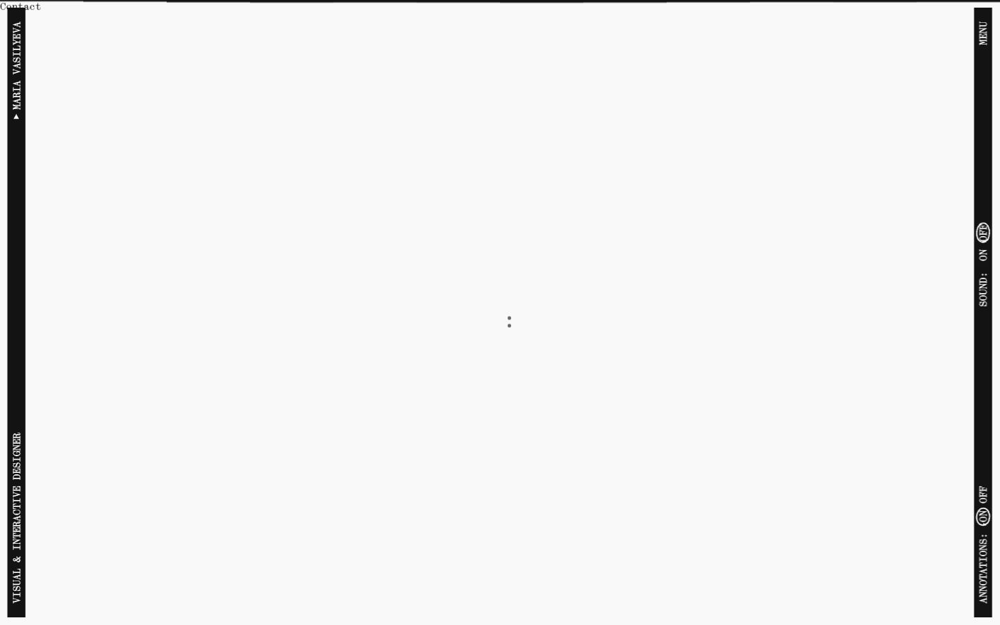
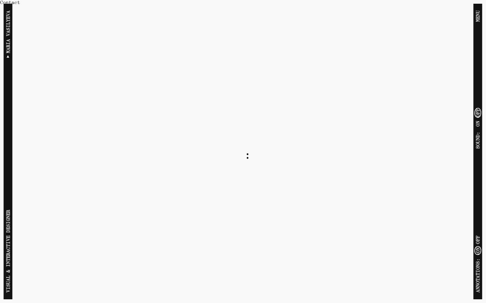

Maria Vasilyeva Portfolio
Captures desktop

Pages internes












Mobile
Stack détectée
CMS Sanity, WebGL
Shaders GLSL personnalisés extraits : 9 (voir shaders.glsl)
Design tokens
Couleurs (fonds, pondérées par surface)
#131313 · #f9f9f9
Couleurs de texte
#f9f9f9 · #131313
Polices utilisées (par volume de texte)
feat · synt · suo
Fichiers de police chargés
Typographie
| Élément | Police | Taille | Graisse | Interligne | Interlettrage | Casse |
|---|---|---|---|---|---|---|
| h2 | feat | 29.3279px | 400 | 29.3279px | -0.586558px | uppercase |
| p | suo | 36.6599px | 400 | 36.6599px | normal | none |
| a | synt | 14.664px | 400 | 14.664px | normal | none |
| button | synt | 14.664px | 400 | 14.664px | normal | none |
| li | synt | 14.664px | 400 | 14.664px | normal | none |
| body | synt, monospace | 14.664px | 400 | 14.664px | normal | none |
Échelle des tailles de texte
14.664px (27) · 29.3279px (9) · 12.831px (9) · 21.9959px (4) · 122.811px (4) · 58.6558px (4) · 36.6599px (2)
Arrondis
aucun (angles droits)
Transitions CSS fréquentes
Points de rupture (media queries)
768px · 769px
Animations CSS (@keyframes)
(aucune)
Variables CSS (:root)
--white: #f9f9f9; --black: #131313; --dark-grey: #626262; --light-grey: #e9e9e9; --g: 1.6rem; --m: 5.3rem; --my: 2rem; --col: calc(8.3333vw - 2.35rem);
Structure de la home
Hauteur : 900 px — 363 nœuds DOM — canvas 3, vidéos 0, images 0
| # | Bloc | Hauteur | Titre | Médias |
|---|---|---|---|---|
| 1 | div .pg_ | 900 | Phantom(2024) | 0 |
Navigation : (01)Notes · (02)Melody · (03)Overture · (04)Jazz · Get in touch · Instagram · Savee
Boutons / CTA :
SEO
Plan des titres
Performance (mesure locale, Chrome headless, connexion non bridée)
Mobile
Fichiers
captures/ : arrivée, scroll desktop (1440×900), pleine page, pages internes, mobile (390×844 @2x) ; vidéo de scroll dans la release GitHub « videos » (lien en haut de fiche)page.html : DOM rendu · styles.css : CSS chargé · scripts/ : JS chargé (index dans _index.json) · shaders.glsl : shaders extraits · rea-bundle.json : analyse REA du bundle (chunks, routes, endpoints)